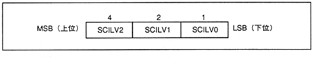

| bit | Interrupt factor |
| 0 | Supports interrupt input of external interrupt input "INT0N" |
| 1 | Supports interrupt input of external interrupt input "INT1N" |
| 2 | Supports interrupt input of external interrupt input "INT2N" |
| 3 | Supports MIDI input interrupts Interrupt occurs when data is taken from the FIFO buffer memory on the MIDI-IN side is empty. When all data is read from the FIFO buffer and the buffer becomes empty, it is automatically canceled. |
| 4 | Supports DMA transfer end interrupt When DMA transfer using SCSP built-in DMA is completed (block (length ( An interrupt is generated when all the data transfer of amount)) is completed. |
| 5 | Supports CPU manual interrupt Interrupts to the sound CPU or main by writing to the CPU (main and sound) I can do it. When "1B" is written, an interrupt is generated ("0B" is invalid). |
| 6 | Supports timer A interrupt |
| 7 | Supports timer B interrupt |
| 8 | Supports timer C interrupt |
| 9 | Supports MIDI output interrupt Interrupt request is generated when the FIFO buffer memory on the MIDI-OUT side is empty. When data is written to the MIDI-OUT buffer memory (register) and it is no longer empty, the interrupt is automatically released. |
| 10 | Corresponds to an interrupt for each sample (1 sample = 22.68μsec = 1 / 44.1K time interval). |
| 11-15 | Disable |
* About SCILV0, 1, 2
∙ This register is used to set the auto vector interrupt level for the sound CPU. Each register is divided in bit units for each interrupt factor, so when setting it, it is necessary to look at Figure 4.65 vertically.
∙ Timer B, C, MIDI output interrupt, and interrupt level for each sample are collectively set in the bit 7 column.
The level is set with a 3-bit code, but each bit is assigned to the SCILV0, 1 and 2 registers.
Figure 4.64 Correspondence between 3-bit code and register

The 3-bit code for setting the level is as shown in Figure 4.64. For example, if you set 101B, the interrupt level will be 5. "000B" is a level 0 interrupt, so no interrupt is applied.
However, the format of the actual register is as shown in Figure 4.65, so be careful when setting it.